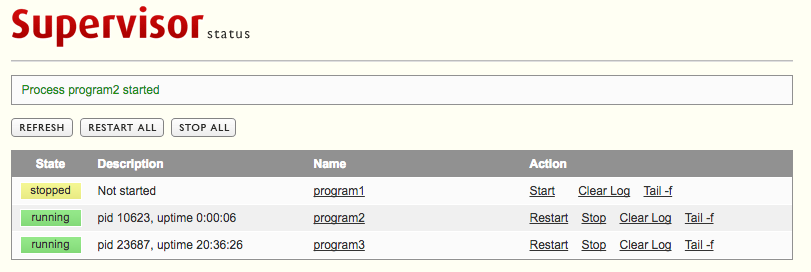

supervisors
Synopsis
Provide a list of supervisor instances
This is a reference part. Refer to the associated overview for a more synthetical view.
Attributes
Each item of the list has the following attribute:
| Name | req? | Description |
|---|---|---|
| name | yes | Name of the supervisor. |
| scope | yes | On which target does this supervisor be deployed? May be:
|
| user | yes | The owner of this supervisor. This account will be allowed to fully control all associated supervisor_programs. |
| group | yes | The group of the owner. |
| managed | no | Boolean. Did this supervisor under the control of HADeploy ? If no, it will only act as a description to be referenced by supervisor_programsYou will find more information on what this attribute is intended for in Supervisor overview / Non-root deployment Default: yes |
| no_remove | no | Boolean: Prevent this supervisor to be removed when HADeploy will be used with --action remove.Default: no |
| enabled | no | Is this supervisord instance daemon start on system boot ? Default: yes. |
| state | no | started: The supervisors instance daemon will be started on deploymentstopped: The supervisord instance daemon will be stopped on deployment.current: The supervisord instance daemon state will be left unchanged during deployment. (stopped on initial creation).started. |
| http_server | no | Allow a management HTTP server to be exposed. See Web Interface below to see how to activate and configure it. |
| when | no | Boolean. Allow conditional deployment of this item. Default True |
Based on these parameters, HADeploy will instanciate a specific supervisord daemon, with the following characteristics:
-
The deamon is a systemd service of name
supervisord_<name>.service. -
Its associated supervisorctl client is named
supervisorctl_<name> -
As a general rules, all associated files and folders layout are the same than the original supervisor, except postfixed by
_<name>. (See the default value of the supplementary attributes below).
If you need to modify this layout, you can use the following supplementary attributes:
| Name | req? | Description |
|---|---|---|
| conf_file_dst | no | Define the location of the supervisor instance configuration file. Default is /etc/supervisord_<name>.conf |
| logs_dir | no | Define the location of the supervisor instance logs folder. Default is /var/log/supervisor_<name>/ |
| pid_dir | no | Define the location of the supervisor instance pid folder. Default is /var/run/supervisor_<name>/ |
| socks_dir | no | Communication between supervisord daemon and the supervisorctl client use a local UNIX domain socket file located in this folder. Default is /var/run/supervisor_<name> |
| supervisorctl | no | For each supervisor instance, HADeploy will generate a shortcut for the command line management tool, build from the supervisor name. Default is /usr/bin/supervisorctl_<name> |
| conf_file_src | no | All supervisor instance parameters are stored in a configuration file. Such file is generated by HADeploy from a template, populated with attributes described in this page. If you need deeper control, you can provide our own template. See Provided configuration file below. |
Web interface
Each supervisor instance can expose a small admin Web interface like this: 
To activate this interface, you need to define the attribute http_server as a map with the following sub-attribute:
| Name | req? | Description |
|---|---|---|
| endpoint | no | The bind address and port of this web server. Default is 127.0.0.0:9001 (Can be only acceded locally, on port 9001). If you want this web server to be accesible remotly, you must modify this value. For example, 0.0.0.0:9001 will bind on all interfaces, on port 9001. |
| username | no | Used to force a login to protect this interface. Default is open interface if no password is provided, or the supervisor's user if a password is provided. |
| password | no | Used to force a login to protect this interface. Can be a clear text password (to be avoided!) or an SHA-1 value. See below. |
One limit of this interface is it manage only a single server. If you have a cluster of nodes with installed supervisors, there is several third party products which will provide you with centralized view of your application. Check this link
Password
An obvious good practice is to not put clear text password in configuration file. Fortunatly, supervisor allow to provide the password as its SHA-1 hash value, prefixed by {SHA}.
For example, {SHA}82ab876d1387bfafe46cc1c8a2ef074eae50cb1d is the SHA-stored version of the password thepassword.
Here is a trick to generate such password. Just enter:
python -c 'import hashlib; print "{SHA}" + hashlib.sha1("thepassword").hexdigest()'
Example
Here is a typical supervisor definition, with an HTTP server exposed on port 9003.
supervisors:
- name: tech1
scope: all
user: tsup
group: tsup
http_server:
endpoint: 0.0.0.0:9003
username: admin
password: "{SHA}d033e22ae348aeb5660fc2140aec35850c4da997"
Once logged on the target node under the tsup account, you can launch the client command line interface:
[tsup@dg17 ~]$ supervisorctl_tech1
program1 STOPPED Not started
program2 RUNNING pid 10623, uptime 0:33:30
program3 RUNNING pid 23687, uptime 21:09:50
supervisor> help
default commands (type help <topic>):
=====================================
add clear fg open quit remove restart start stop update
avail exit maintail pid reload reread shutdown status tail version
Of course, here there is already some programs launched. See supervisor_programs
Here is another example where one want to relocate all related file in a specific folder:
folders:
- { scope: all, path: /opt/tech2, owner: tsup, group: tsup, mode: "0755" }
supervisors:
- name: tech2
scope: all
user: tsup
group: tsup
conf_file_dst: /opt/tech2/supervisord.conf
logs_dir: /opt/tech2/logs
pid_dir: /opt/tech2/run
socks_dir: /opt/tech2/pid
include_dir: /opt/tech2/supervisord.d
supervisorctl: /opt/tech2/supervisorctl
Then, the command line interface will be launched using:
[tsup@dg17 ~]$ /opt/tech2/supervisorctl
program4 RUNNING pid 23701, uptime 21:17:01
System instance
When installing its own instance of the supervisor program, HADeploy will first install the supervisor system package. This will create a first, system default, instance.
By default, this instance is not activated:
[root@dg17:~]# systemctl status supervisord
● supervisord.service - Process Monitoring and Control Daemon
Loaded: loaded (/usr/lib/systemd/system/supervisord.service; disabled; vendor preset: disabled)
Active: inactive (dead)
It is up to the user to activate it if needed. But keep in mind this instance is under root control, and as such can't be managed by non-priviledged users.
Provided configuration file.
This is Advanded configuration.
At the hearth of each instance of supervisor is a main configuration file, used by both the supervisord_<name> daemon and the supervisorctl_<name> command line interface.
Such file is generated by HADeploy by populating a template from the values provided as attributes.
In most case this will be sufficient. But if, for some specifics cases, you need to modify other parameters of this configuration file, you can provide your own template.
Of course, you should be familiar with the original supervisor configuration syntax.
Then, you can provide your own file using the conf_file_sr attribute, by providing it as a file, or as a template, such as:
supervisors:
- name: tech2
...
conf_file_src: tmpl://supervisord_tech2.conf.jj2
...
This will be handled as usual files or template ressource (See here)
NB: Only
file://ortmpl://schema are allowed here.
As a starting point, here is the provided template:
; supervisor_{{{name}}}.conf (HADeploy generated)
[unix_http_server]
file={{{socks_dir}}}/supervisor.sock ; (the path to the socket file)
chmod=0700 ; sockef file mode (default 0700)
chown={{{user}}} ; socket file uid:gid owner
chgrp={{{group}}}
;username=user ; (default is no username (open server))
;password=123 ; (default is no password (open server))
{{% if http_server is defined %}}
[inet_http_server] ; inet (TCP) server disabled by default
port={{{ http_server.endpoint }}} ; (ip_address:port specifier, *:port for all iface)
{{% if http_server.password is defined %}}
username={{{ http_server.username }}} ; (default is no username (open server))
password={{{ http_server.password }}} ; (default is no password (open server))
{{% endif %}}
{{% endif %}}
[supervisord]
logfile={{{logs_dir}}}/supervisord.log ; (main log file;default $CWD/supervisord.log)
logfile_maxbytes=50MB ; (max main logfile bytes b4 rotation;default 50MB)
logfile_backups=10 ; (num of main logfile rotation backups;default 10)
loglevel=debug ; (log level;default info; others: debug,warn,trace)
pidfile={{{pid_dir}}}/supervisord.pid ; (supervisord pidfile;default supervisord.pid)
nodaemon=false ; (start in foreground if true;default false)
minfds=1024 ; (min. avail startup file descriptors;default 1024)
minprocs=200 ; (min. avail process descriptors;default 200)
umask=022 ; (process file creation umask;default 022)
user={{{user}}} ; (default is current user, required if root)
identifier=supervisor_{{{name}}} ; (supervisord identifier, default is 'supervisor')
;directory=/tmp ; (default is not to cd during start)
;nocleanup=true ; (don't clean up tempfiles at start;default false)
;childlogdir=/tmp ; ('AUTO' child log dir, default $TEMP)
;environment=KEY=value ; (key value pairs to add to environment)
;strip_ansi=false ; (strip ansi escape codes in logs; def. false)
; the below section must remain in the config file for RPC
; (supervisorctl/web interface) to work, additional interfaces may be
; added by defining them in separate rpcinterface: sections
[rpcinterface:supervisor]
supervisor.rpcinterface_factory = supervisor.rpcinterface:make_main_rpcinterface
[supervisorctl]
serverurl=unix://{{{socks_dir}}}/supervisor.sock ; use a unix:// URL for a unix socket
;serverurl=http://127.0.0.1:9001 ; use an http:// url to specify an inet socket
;username=chris ; should be same as http_username if set
;password=123 ; should be same as http_password if set
;prompt=mysupervisor ; cmd line prompt (default "supervisor")
;history_file=~/.sc_history ; use readline history if available
[include]
files = {{{include_dir}}}/*.ini
You can see than variable hosting configuration attribute are of the form {{{...}}}. If you want to use your own variable (Set in the vars:block), you must use the {{...}}notation.
More information on variable syntax in Under the hood
You should note also there is no part about the managed programs themself. (No [program:x] section). Such part will be managed by 'supervisor_programs`, by adding files in the include folder defined at the end.
Also, another better starting point if you plan to provide you own template would be to use the one corresponding to you version of HADeploy. You can easely grab it from Github, by setting the tag corresponding to your version.